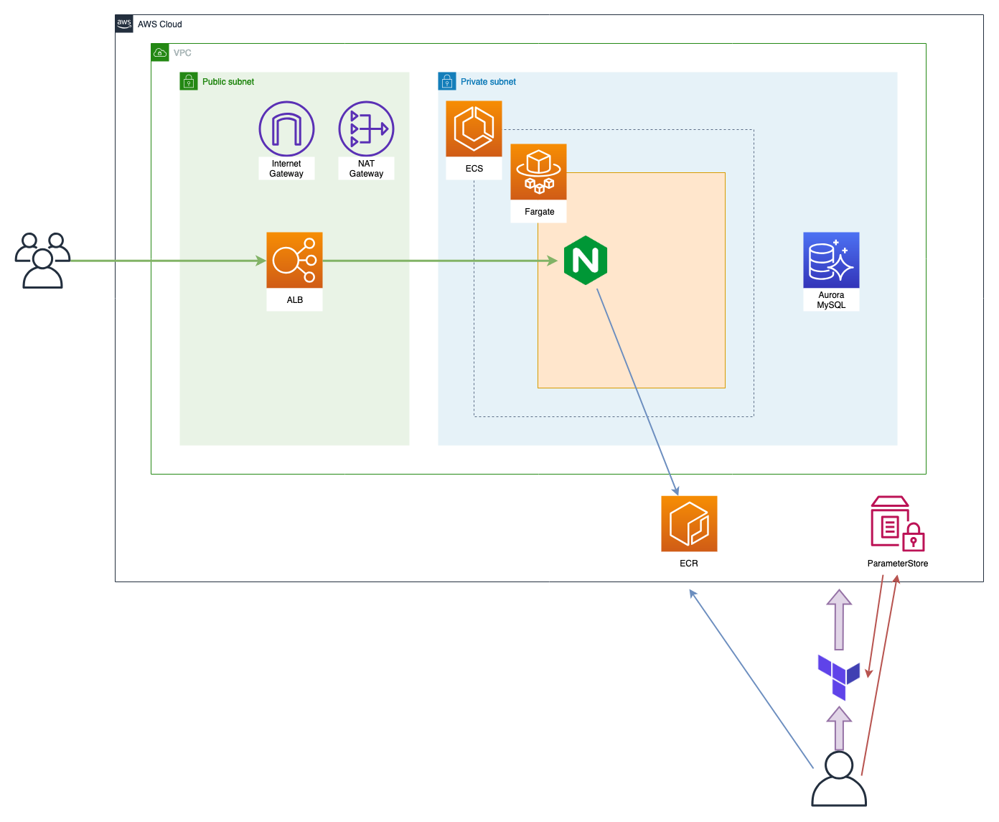
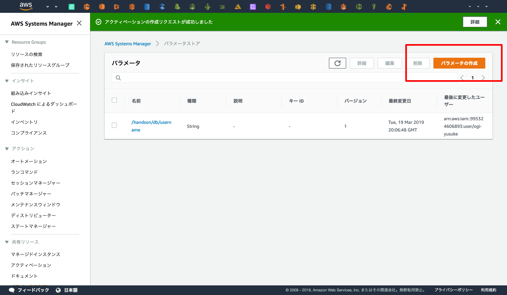
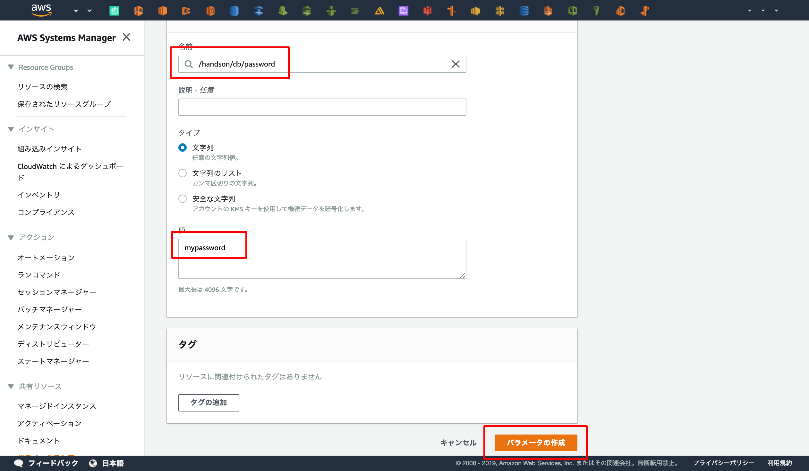

ハンズオンの環境構築
作成する環境¶

AZ・RouteTable・SecurityGroupなどは省略していますが、上記の環境を目標に構築していきます。
ハンズオン環境の構築¶

基本的にTerraformで構築しますが、ParameterStoreとECRだけ手動で構築します。
ParameterStoreはDBのユーザー名/パスワードのデフォルト値を格納したいため、
ECRはTerraformのプロビジョニング時にECSを同時に動かしたいためです。
ParameterStore¶
ParameterStoreはAWSのサービスの1つで、シークレット情報や設定情報を管理するためのサービスです。
このハンズオンでは "DBのユーザー名" と "DBのパスワード" をParameterStoreで管理します。
まずはWebコンソールへ接続してください。
AWS Systems Manager - Parameter Store

ユーザー名の登録¶
まずはユーザー名を登録します。
名前を /handson/db/username で登録し、値は任意の文字列を入力してください (1 ~ 16文字の英数字を使用する必要があります)。
ここでは myusername とします。


パスワードの登録¶
続いてパスワードを登録します。
名前を /handson/db/password で登録し、値は任意の文字列を入力してください (8文字以上の英数字を使用する必要があります)。
ここでは mypassword とします。

登録情報の確認¶
最後に /handson/db/username と /handson/db/password が登録していることを確認してParameterStoreの操作は完了です。

ハンズオン用リポジトリのclone¶
ローカルへハンズオン用リポジトリのcloneをします。
$ git clone https://github.com/y-ohgi/2019-aws-handson.git $ cd 2019-aws-handson
ECR¶
Registryの作成¶
まずはECRへアクセスし、「Get Started」からDockerレジストリの作成を開始します。
レジストリ名を「 handson-nginx 」と入力します。
レジストリの作成が完了しました！
ここに表示されているURIはDocker Image をpushするときに必要なので控えておきます。
Docker Build¶
DockerのBuildを実行します。
先程控えたURIを使用してECRへビルドしたDocker Image をpushします。
$ export ECR_URI_HANDSON_NGINX=<YOUR ECR REGISTRY URI> # 先程控えたURIを環境変数へ展開します。
$ docker build \
-t ${ECR_URI_HANDSON_NGINX} \
-f docker/handson-nginx/Dockerfile \
docker/handson-nginx
dockerを立ち上げてnginxが立ち上がるか確認してみましょう
$ docker run -p 8080:80 ${ECR_URI_HANDSON_NGINX}
ECRへDockerをpush¶
AWSへログインし、ECRのアクセス情報を取得します。
アクセスキーは先ほど作成したterraformのものを流用しましょう。
$ aws configure AWS Access Key ID [None]: <YOUR ACCESS KEY> AWS Secret Access Key [None]: <YOUR SECRET KEY> Default region name [None]: ap-northeast-1 Default output format [None]: json
ログイン後、dockerの認証情報を取得します。 WARNINGと表示されますが、無視して問題ありません。
$ $(aws ecr get-login --no-include-email --region ap-northeast-1) WARNING! Using --password via the CLI is insecure. Use --password-stdin. Login Succeeded
最後に、作成したDocker Image をpushしてECRにアップロードされたことを確認します。
$ docker push ${ECR_URI_HANDSON_NGINX}
https://ap-northeast-1.console.aws.amazon.com/ecr/repositories/handson-nginx/?region=ap-northeast-1
no basic auth credentials
docker push 後に"no basic auth credentials"と表示される場合、aws cliでログインしているアカウントが異なっています。
現在のdefault profile がどのアカウントのものになっているか確認してから $ を行います
Terraformでプロビジョニング¶
実際に図のAWSの環境を構築していきます。
Terraformの初期化¶
Terraform用ディレクトリにチェックアウトし、初期化を行います。
$ cd terraform $ ls main.tf
Dockerからterraformを立ち上げます。
$ docker run \
-e AWS_ACCESS_KEY_ID=<AWS ACCESS KEY> \
-e AWS_SECRET_ACCESS_KEY=<AWS SECRET ACCESS KEY> \
-v $(pwd):/templates \
-w /templates \
-it \
--entrypoint=ash \
hashicorp/terraform:0.11.12
$ terraform init
プロビジョニング¶
どんなリソースが作成されるのか plan で確認し、 apply でプロビジョニングを実行します。
$ terraform plan $ terraform apply
RDSのプロビジョニングに時間がかかるため、15分ほど待ちます。
作成されるサービス・リソースのコンソールへのリンク¶
今回使用するAWSサービスのコンソールへのリンクです。
Terraform実行中の場合まだ作成されていないリソースもあるかとおもいます。
- VPC
- ECS
- Parameter Store
- RDS
環境の確認¶
Terraformのプロビジョニングが完了するとDNSが表示されるのでアクセスして動作確認をしましょう。